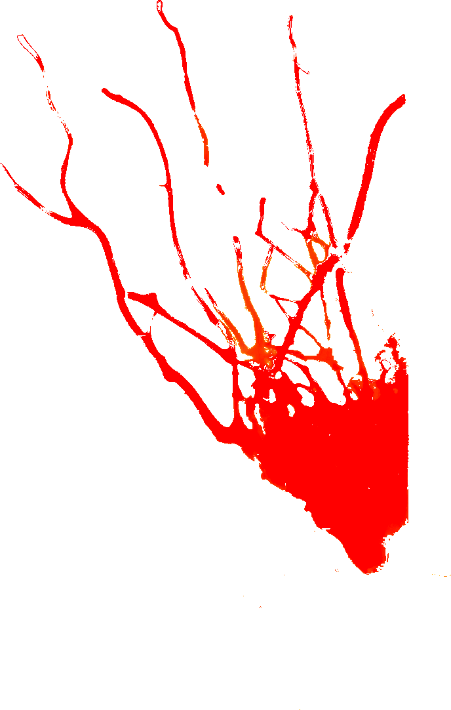

Una investigación sin respuesta · 01—∞
¿Casualidades?
Tantas formas parecidas.
¿Son realmente casualidades?

01 / 09UNA FORMA, OTRO MUNDO
La gota
Una corriente encuentra una salida. Del azar aparece una dirección; de esa dirección, otras.
AGUA · CERCA